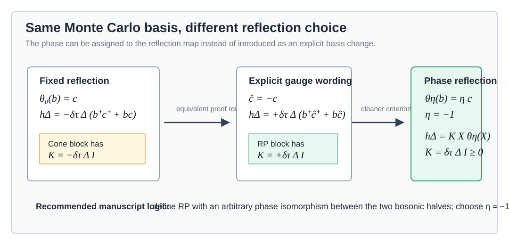

相位扭转反射正定性与 pairing BAFQMC 的直接 sign-free 判据
核心结论。 pairing benchmark 的 \(+\Delta\) convention 可以在原始 Monte Carlo basis 中直接证明 sign-free。做法是把 RP 判据中的反射映射从固定的 \(\theta_0(b_i)=c_i\) 写成相位扭转反射 \(\theta_E(b_i)=\eta_i c_i\)，其中 \(|\eta_i|=1\)。对于当前 paired triangular benchmark 取统一相位 \(\eta_i=-1\)。这样 Trotter generator \(-\delta\tau\Delta\sum_i(b_i^+c_i^+ + b_i c_i)\) 直接等于一个正的 reflected-square cone 项。
因此，论文正文可以避免把这一点表述为“先做全局规范变换”。更自然的写法是在 RP 判据处说明反射同构允许包含单位相位，在应用部分直接选择 \(\theta_-(b_i)=-c_i\)。详细的等价性和相位选择约束可以放到 SM。
关于复数 pairing amplitude。 若物理 Hamiltonian 写成 Hermitian 形式 \(\Delta b_i^+c_i^+ + \Delta^* b_i c_i\)，则任意整体复相位都是 sign-free 的。若字面写成同一个复数 \(\Delta(b_i^+c_i^+ + b_i c_i)\)，则除 \(\Delta\) 为实数外 Hamiltonian 一般不是 Hermitian，也不应作为正文 sign-free 声明。
关于 \(+\Delta\) 与 \(-\Delta\)。 当前 benchmark 图中的 \(\rho\)、\(-E\)、\(S_{\rm SF}(K)\)、\(S_{\rm DW}(K)\) 对 pairing 符号不敏感。两个 Hamiltonian 由全局 flavor 相位 \(c_i\mapsto -c_i\) 幺正等价，因此这些 gauge-even observables 和热力学能量完全相同。若正文希望让反射相位因子取 \(1\)，可以把模型写成 \(-\Delta b_i^+c_i^+-\Delta^*b_i c_i\)，并把图中的横轴理解为 \(|\Delta|\)。
从显式规范变换到相位反射

图中的三种写法给出同一个 trace。区别只在论证语言：固定反射加规范变换是两步叙述；相位扭转反射是一条直接判据。
1. 科学问题
当前正文 Section IV 为了说明 \(+\Delta(b^+c^+ + bc)\) 的 sign-free structure，写了全局规范变换 \(\tilde c_i=-c_i\)。这在数学上正确，也和代码没有显式变换不矛盾。写作上它引入了一个额外实体：读者可能以为算法或 benchmark 做了某个 basis change。
更紧凑的物理叙事是：RP 判据本身选择的是左、右 bosonic algebra 之间的反线性同构。这个同构本来就包含相位 convention。只要 cone proof 在相位扭转后仍成立，正文就可以直接使用这个更自然的反射。
2. 相位扭转反射
令左半系统由 \(b_i,b_i^+\) 生成，右半系统由 \(c_i,c_i^+\) 生成。取一个对角单位相位矩阵 \(E=\mathrm{diag}(\eta_1,\ldots,\eta_M)\)，\(|\eta_i|=1\)，定义反线性映射
它和原来的 \(\theta_0\) 一样，是从左 algebra 到右 algebra 的反线性乘法同构，并且满足 \(\theta_E(X^+)=\theta_E(X)^+\)。相位只改变左右 flavor 的识别方式，不改变 Hilbert space 或 Monte Carlo 传播矩阵。
3. Cone proof 不变
定义相位扭转 cone
这个 cone 对加法和乘法仍然封闭，因为左、右 bosonic algebra 彼此对易。trace 正性也保持。设 \(\Gamma_E\) 是右 Fock space 上实现 \(c_i\mapsto\eta_i c_i\) 的 number-conserving unitary，则
于是
因此主文 RP 判据中的所有 cone argument 对 \(\theta_E\) 原样成立。
4. 生成元判据
若某个 slice generator 可以写成
则 \(\exp h\in e^\xi \mathcal K_{\theta_E}\)，从而整个 auxiliary-field 配置权重非负。证明和固定反射版本相同： \(q+\theta_E(q)\) 的 exponential 是 \(e^q\theta_E(e^q)\)，而 \(K=R^+R\) 后 mixed term 可以写成 \(\sum_a Y_a\theta_E(Y_a)\)。
判据的正确扩展。 \(K\succeq0\) 不是被放宽。被放宽的是反射同构的选择。实际使用时应表述为：存在一个相位反射 \(\theta_E\)，使每个 HS slice 属于对应的 RP cone。
5. Gaussian block 的 coordinate-invariant 版本
把左 Nambu 向量记为 \(x=(\mathbf b,\mathbf b^+)^T\)，右 Nambu 向量记为 \(y=(\mathbf c,\mathbf c^+)^T\)，并定义
若左半部分为 \(q=x^T D x\)，则右半部分应为
若 mixed block 在原始 coordinate 中写成 \(x^T F_{\rm coord}y\)，则它属于正 cone 的条件是
这就是比固定 \(\theta_0\) 更实用的 Gaussian RP 测试。固定反射相当于 \(P_E=I\)，于是要求 \(F_{\rm coord}\succeq0\)。相位扭转反射允许 \(F_{\rm coord}\) 带一个可由反射吸收的单位相位。
6. 半群表述如何适配
当前 SM 的 \(\textit{Regularized reflection positivity from the semigroup viewpoint}\) 使用固定反射矩阵 \(J_1\) 和 \(J_2\)。如果论文正文采用相位扭转反射，SM 中这部分也应同步改成相位协变形式。令 \(E=\mathrm{diag}(\eta_i)\)，在 SM 的 Nambu ordering \((\mathbf b,\mathbf c,\mathbf b^+,\mathbf c^+)^T\) 中应使用
它们分别取代当前 SM 中的 \(J_1,J_2\)。因为 \(E\bar E=I\)，这些矩阵保持相同的反线性结构： \(J_{1,E}\bar J_{1,E}=I\)，\(J_{2,E}\bar J_{2,E}=-I\)。相应的 reflection condition 和 semigroup splitting 变成
之后的半群论证是协变的：metric-preserving part 满足 \((A_+^{(E)})^+\eta_E+\eta_E A_+^{(E)}=0\)，cone part 由 phase-dressed Hermitian block 控制。也就是说，SM 里 \(K\succeq0\) 的结论不变，但 \(K\) 应理解为在选定相位反射下抽出的 block，而不是固定 \(E=I\) 的 block。
在 Gaussian coordinate 语言中，这个 phase-dressed block 正是上一节的
因此，如果正文采用 \(\theta_-\)，SM 不能继续只写固定 \(J_1,J_2\) 而不说明相位 convention。最简洁的修改方式是在 SM 半群节开头把 \(J_1,J_2\) 推广为 \(J_{1,E},J_{2,E}\)，随后说明当前正文公式是 \(E=I\) 的特例，paired benchmark 使用 \(E=-I\)。
7. 当前 pairing benchmark 的直接证明
主文物理 Hamiltonian 使用
Monte Carlo slice 中 pairing generator 为
直接选择统一相位反射
令 \(X_i^{(1)}=b_i\)、\(X_i^{(2)}=b_i^+\)。则
因此 operator-level mixed cone matrix 是
若把同一项写成 Nambu quadratic matrix，由于 \(\chi^T M\chi\) 对 \(b^+c^+\) 和 \(bc\) 计数方式不同，正文中对应的 reflected anomalous block 可写为 \(F=(\delta\tau\Delta/2)I\)。这个证明完全在原始 \(b,c\) basis 中进行。代码不需要显式变换 \(c\to -c\)，论文正文也可以不把 sign-free 结构叙述成先做规范变换。
8. 对 number-conserving 项的约束
相位反射不是任意可选的装饰；它必须同时让同一个 slice 的 number-conserving 部分满足 \(q+\theta_E(q)\)。如果 \(\eta_i\) 随 site 变化，\(\theta_E(b_i^+b_j)=\eta_i^*\eta_j c_i^+c_j\)，会给右 flavor hopping 产生 Peierls 相位。因此 phase choice 需要和右半部分的 hopping pattern 一致。
当前 benchmark 取统一相位 \(\eta_i=-1\)，所以
hopping、density interaction、chemical-potential terms 的 RP/TRS 结构都保持不变。paired term 同时获得正 cone block。
9. 复数 pairing amplitude 的情况
如果将 pairing amplitude 推广为复数，必须先固定物理 Hamiltonian 的 Hermiticity convention。自然的 Hermitian 写法是
对应的 imaginary-time generator 为
选择统一相位反射
则有
因此 mixed cone matrix 仍为
由于这里的相位是全局常数，\(\eta_i^*\eta_j=1\)，number-conserving hopping、density interaction 和 chemical-potential terms 的 RP 结构不受影响。换言之，若正文采用 Hermitian pairing convention，则任意整体复数 \(\Delta\) 都可以由相位反射直接覆盖。
不要混淆两种写法。 字面表达式 \(\Delta\sum_i(b_i^+c_i^+ + b_i c_i)\) 只有在 \(\Delta\in\mathbb R\) 时才是 Hermitian。若 \(\Delta\) 为一般复数而仍给 \(b_i^+c_i^+\) 和 \(b_i c_i\) 同一个系数，通常得不到实的反射正定 cone coefficient，也不能直接宣称为非负权重模型。若未来要在正文中允许复数 pairing，应写成 \(\Delta b_i^+c_i^+ + \Delta^* b_i c_i\)。
10. \(+\Delta\) 与 \(-\Delta\) 是否影响 benchmark 图
令 \(P=\sum_i(b_i^+c_i^+ + b_i c_i)\)，并先考虑实数 \(\Delta\ge0\)。两个实 pairing convention 为
定义右 flavor 的全局相位变换 \(U_c\)：
hopping、density interaction、chemical-potential terms 均不变，而 \(P\mapsto -P\)。因此
若可观测量 \(O\) 满足 \(U_c^+OU_c=O\)，则
当前 benchmark 图中的 density \(\rho\)、superfluid structure factor \(S_{\rm SF}(K)\propto\langle b_i^+b_j+c_i^+c_j\rangle\)，以及 density-wave structure factor \(S_{\rm DW}(K)\) 都是 \(U_c\)-even，因此在 \(H_+\) 与 \(H_-\) 中取值相同。能量需要单独说：图中能量是各自 Hamiltonian 的热平均 \(E_\pm=\mathrm{Tr}(H_\pm\mathrm e^{-\beta H_\pm})/Z_\pm\)，由于 \(H_-=U_cH_+U_c^+\)，所以 \(E_-=E_+\)。若能量 estimator 被分解为 kinetic、interaction 与 pairing 三部分，裸 pairing expectation 会变号，但 pairing Hamiltonian term 的贡献保持相同。
限制。 这个等价不适用于所有可观测量。裸 pairing amplitude \(P=\sum_i(b_i^+c_i^+ + b_i c_i)\) 是 \(U_c\)-odd，因此 \(\langle P\rangle_-= -\langle P\rangle_+\)。若以后画 pairing order parameter 或 anomalous Green function，需要同时变换可观测量的 convention。当前两张 benchmark 图没有展示这类 gauge-odd quantity。
从写作上看，若正文采用
则 imaginary-time generator 是
此时选择
即可得到 \(K_\Delta=\delta\tau|\Delta|I\succeq0\)。对于实数 \(\Delta\ge0\)，这就是最简单的固定反射 \(\theta_0(b_i)=c_i\)。这也是正文里最自然的应用写法。
11. 建议的论文写法
| 位置 | 建议 | 理由 |
|---|---|---|
| Main text, RP criterion | 在定义 \(\theta\) 后加一句：反射同构可以包含固定单位相位，例如 \(\theta(b_i)=\eta_i c_i\)。 | 让判据自身覆盖 pairing benchmark，避免应用部分另引入规范变换。 |
| Main text, Gaussian RP block | 正文仍保留简洁的 \(F\succeq0\) 形式，可称其为某个已选反射 convention 下的 block form。 | PRL 正文不需要展开 \(P_E\) 矩阵，避免技术细节压住物理故事。 |
| Main text, Section IV pairing paragraph | 优先写 Hermitian convention \(H_{\rm pair}=-\sum_i(\Delta b_i^+c_i^+ + \Delta^* b_i c_i)\)。实数 \(\Delta\ge0\) 时直接用 \(\theta(b_i)=c_i\)，anomalous block 为 \(F=(\delta\tau\Delta/2)I\succeq0\)。 | 直接使用判据，不再说“after a global gauge transformation”；固定反射相位为 \(1\)，读者负担最低。 |
| SM | 给出本报告第 2--10 节的详细公式；同时把半群节的 \(J_1,J_2,\eta\) 改成相位协变版本，或明确当前固定反射只是 \(E=I\) 特例。 | 保留严格推导和读者可查路径，同时正文保持干净。 |
边界条件。 这个扩展没有改变可计算物理区域的本质分类。它只是把固定 basis 中看似负的 mixed block 识别为另一个合法反射 cone 中的正 block。更一般的相位、子格相位或 flavor rotation 是否可用，要逐个检查 number-conserving 部分和 HS decoupled slice 的全部 block 结构。
12. 可复用判据摘要
对当前 \(+\Delta\) benchmark，取 \(\eta_i=-1\)，即可直接得到 \(K_\Delta=\delta\tau\Delta I\succeq0\)。
对 Hermitian 复数 pairing \(\Delta b_i^+c_i^+ + \Delta^* b_i c_i\)，取 \(\eta_i=-\mathrm e^{-\mathrm i\arg\Delta}\)，即可得到 \(K_\Delta=\delta\tau|\Delta|I\succeq0\)。
对推荐的负号 convention \(-\Delta b_i^+c_i^+-\Delta^* b_i c_i\)，取 \(\eta_i=\mathrm e^{-\mathrm i\arg\Delta}\)。实数 \(\Delta\ge0\) 时 \(\eta_i=1\)，即固定反射。
13. 审计索引
| 材料 | 路径 | 用途 |
|---|---|---|
| Current RP criterion | main.tex, Section III, Reflection positivity | 固定 \(\theta_0(b)=c\)、cone proof、Gaussian block form |
| Current semigroup RP | SM.tex, Regularized reflection positivity from the semigroup viewpoint | 当前固定 \(J_1,J_2,\eta\)；若采用相位反射，应改成 \(J_{1,E},J_{2,E},\eta_E\) |
| Current benchmark paragraph | main.tex, Section IV | 当前用 global gauge transformation 解释 paired block |
| Benchmark SM convention | SM.tex, pairing-sign convention | 说明 \(+\Delta\) benchmark 与 gauged convention 等价 |
| Benchmark observables | main.tex, benchmark captions and observable definitions | \(\rho\)、\(S_{\rm SF}\)、\(S_{\rm DW}\) 是 \(c_i\mapsto -c_i\) 下的 even quantities；\(-E\) 由 Hamiltonian 的幺正等价保证不变 |
| Previous sign report | docs/research_reports/2026-06-21_delta_sign_gauge/report_delta_sign_gauge_zh.html | 证明旧 benchmark 无需重跑；本报告进一步优化正文判据语言 |
| Generated schematic | figures/phase_twisted_reflection.svg | 展示三种等价证明语言 |
备注：本报告使用 \(\delta\tau\) 表示 imaginary-time step，以避免和 pairing amplitude \(\Delta\) 在同一公式中视觉混淆。论文正文仍可沿用现有 \(\Delta\tau\) 记号。